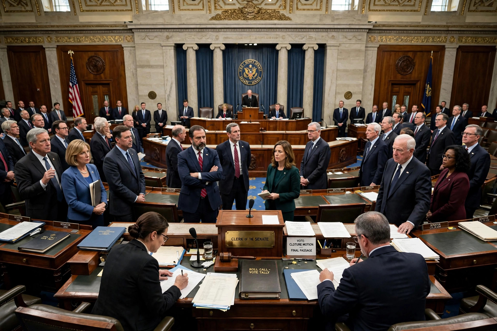

From Wikipedia, the free encyclopedia
| Nuclear option | |
|---|---|
| Type | Parliamentary maneuver (U.S. Senate) |
| Effect | Reinterprets Senate precedent by simple-majority vote |
| First used | November 21, 2013 (nominations except Supreme Court) |
| Extended | April 6, 2017 (Supreme Court nominations) |
| Term coined by | Associated with Sen. Trent Lott, c. 2003 |

The nuclear option is a parliamentary procedure in the United States Senate by which the chamber's rules or precedents can be reinterpreted by a simple majority vote, rather than by the two-thirds vote ordinarily required to change the Standing Rules. It is most famously used to lower the cloture threshold so that a simple majority can end debate, thereby weakening or eliminating the filibuster for a category of business.
A senator raises a point of order asserting, for example, that the debate threshold on a matter is a simple majority. The presiding officer, following the written rule, rules against the point of order; the Senate then votes on whether to sustain the chair's ruling. If a majority votes not to sustain it, the contrary precedent is established and governs going forward—effectively changing the rules without amending their text.
In November 2013, the Democratic majority, led by Harry Reid, used the maneuver to set a simple-majority cloture threshold for executive-branch and lower-court judicial nominations, after sustained Republican blockades of President Obama's nominees. In April 2017, the Republican majority, led by Mitch McConnell, extended the precedent to Supreme Court nominations during the confirmation of Neil Gorsuch, after Democrats filibustered the nomination. The legislative filibuster—sixty votes to invoke cloture on ordinary bills—remained intact after both episodes, despite recurring proposals to abolish it, since many senators value it as a check on the majority and a protection they may one day need themselves.
Supporters argue the maneuver restores majority rule and prevents minority obstruction of the Senate's advice-and-consent duty. Critics warn that each use invites retaliation and escalation, eroding the Senate's distinctive deliberative character; the name itself, in use since the early 2000s, reflects the fear of mutually assured procedural destruction.